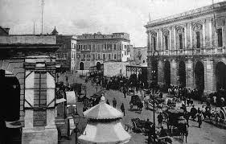

La storia di Bari è affascinante e travagliata. L’insediamento antico risale all’Età del Bronzo, passato dai Peucezi alla dominazione dei Goti, poi conteso da Bizantini e Longobardi. Più volte saccheggiata e distrutta, la Bari medievale fu dominata dai Saraceni diventando un piccolo Stato musulmano indipendente. Fu poi conquistata dai Franchi prima di tornare in mano all’imperatore d’Oriente, che la rese il maggior centro politico, militare e commerciale italiano dell'Impero orientale. Nel 1087, con l’arrivo delle reliquie di San Nicola di Myra, noto come Santa Claus, Bari divenne anche un rigoglioso centro religioso che univa Oriente e Occidente. La dominazione normanna in Puglia assicurò a Bari un lungo periodo di prosperità, ma fu anche oggetto di conflitti. Ricostruita dagli gli Svevi visse un nuovo momento di splendore, che decadde di nuovo con gli Angioini poiché dilaniata dalle lotte tra signorotti locali e banchieri stranieri. Passata agli Aragonesi e donata ai duchi di Milano nel 1464, nel 1500 fu riportata ai fasti di un tempo da Isabella d’Aragona. Nel 1558 finì nelle mani degli spagnoli, con diverse ribellioni sanguinose, e nel 1657 fu duramente provata dalla peste. Passò poi dal dominio austriaco a quello dei Borboni, rinascendo sotto il comando francese dei primi anni del 1800 con la costruzione della città nuova. Ritornata ai Borbone nel 1815, entrò a far parte del Regno d’Italia nel 1860. Un lungo passato di dominazioni che hanno lasciato a Bari un patrimonio artistico unico, da ammirare per sognare a occhi aperti.


